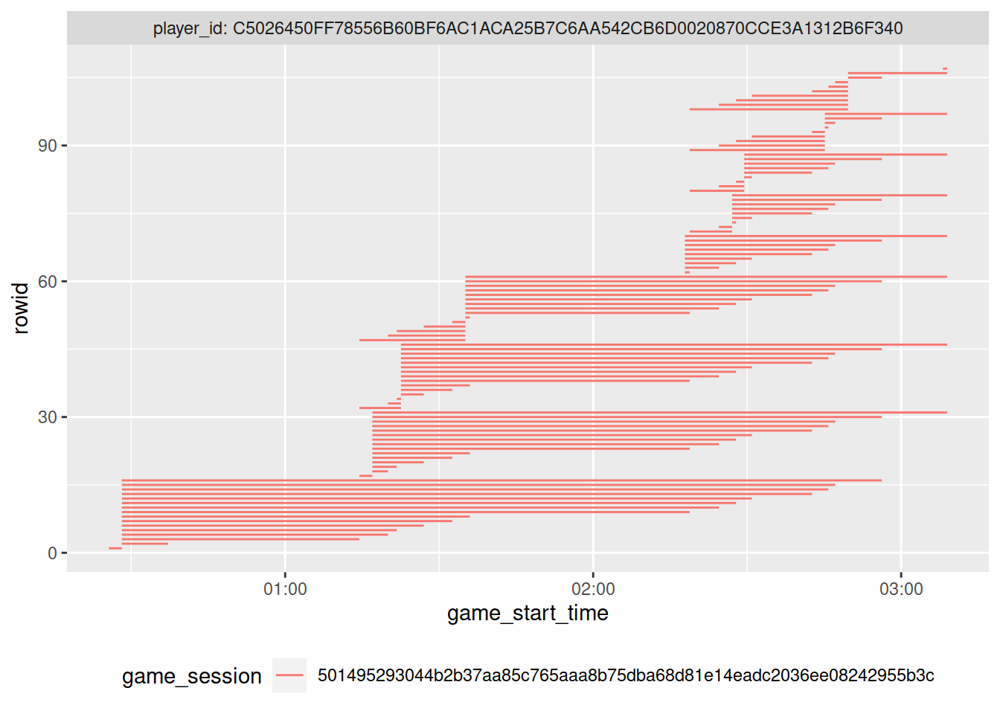
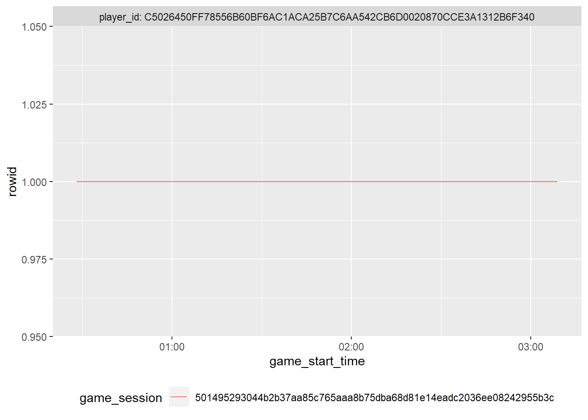

2 Process PVZ data
Here, we process the Plants vs. Zombies: Battle for Neighborville (PVZ) survey and telemetry data files (i.e., gaming data that was captured by EA’s servers).
We used the following R packages. Pacman is a package manager that install packages if you don’t have them installed. We always show the package versions at the bottom of each section.
library(pacman)
p_load(
readxl,
knitr,
here,
lubridate,
scales,
janitor,
anytime,
tidyverse
)2.1 Raw data
The raw data files, including the raw survey data, are in a zip compressed file on OSF: https://osf.io/cjd6z/. (A user ID column was manually removed from the survey data before uploading.) Start by downloading that file and unpacking it to the target directory:
file_dest <- here("data-raw/ea/ea.zip")
# Download & extract file only if you haven't yet
if (!file.exists(file_dest)) {
download.file("https://osf.io/4gp3r/download", file_dest)
}
if (!file.exists(here("data-raw/ea/Oxford PvZ - Pilot Wave + Wave 1 Download.xlsx"))) {
unzip(file_dest, exdir = here("data-raw/ea/"))
}EA sent out the survey in two waves: one in August of 2020, the second in September 2020. For each wave, there are 9 telemetry files, each one recording a different aspect of play events in Plants vs. Zombies: Battle for Neighborville and one file for the survey results.
These telemetry files contain info on PVZ play events from a long period of time, including for players who did not participate in the survey. We limit our analyses to the individuals who participated in the survey, and to the 2 weeks preceding the survey. However, the raw data files might be of interest for additional analyses.
2.2 Process raw files
Because there were two of each telemetry file (waves), we create a function to read both waves’ data into a single table:
read_both_waves <- function(stub = "OII_PVZ_Authentications", ...) {
# Filenames of wave 1 and 2 authentications files
list.files(
here("data-raw/ea"), pattern = stub, full.names = TRUE
) %>%
# Put wave 1 first
rev() %>%
# Read into a list of data frames
map(read_csv, ...) %>%
# Bind into one data frame with wave ID
bind_rows(.id = "wave") %>%
# Take only participants who filled out survey
filter(player_id %in% survey$player_id)
}2.2.1 Survey
Because we only keep telemetry data of players who answered the survey, we’ll load the survey first.
survey <- read_excel(
here("data-raw/ea/Oxford PvZ - Pilot Wave + Wave 1 Download.xlsx")
)
survey <- survey %>%
mutate(
# Ensure date data type
date = mdy_hm(date),
# Need another name to use in filtering telemetry
start_date = date
) %>%
# Other files use player_id
rename(player_id = UID)2.2.1.1 Clean and transform
Next, we give some sensible variable names and assign proper variable types for the survey.
# Rename variables
survey <-
survey %>%
select(
# meta-info
player_id,
start_date, date,
survey_duration = qtime,
of_age = Q2,
consent = Q3,
# demographics
played = Q1,
country = hCountry,
survey_language = PRELANG,
age = D1,
gender = D2,
gender_other = D2r3oe,
experience = D3,
# well-being
spane_ = starts_with("A1"), # general well-being in the two weeks
straightliner_spane = hA1Straight,
# motivations
played_with_others = NSat1, # filter question that determines whether relatedness items were shown
autonomy_ = NSat2r1:NSat2r3,
competence_ = NSat2r4:NSat2r6,
relatedness_ = NSat2r7:NSat2r9,
enjoyment_ = NSat2r10:NSat2r13,
extrinsic_ = NSat2r14:NSat2r17,
straightliner_motivations = hNSat2Straight,
# self-reported play
active_play_hours = GT1c1,
active_play_minutes = GT1c2,
within_estimate = GT2,
between_estimate = GT3,
spane_game_ = starts_with("GT4")
)
# Assign proper variable types and factor levels
survey <- survey %>%
mutate(
across(
c(
player_id,
of_age:survey_language,
gender,
played_with_others
),
as.factor
),
across(
c(of_age:played, played_with_others),
~ fct_recode(
.x,
"Yes" = "1",
"No" = "2"
)
),
gender = fct_recode(
gender,
"Male" = "1",
"Female" = "2",
"Other" = "3",
"Prefer not to say" = "4"
),
country = fct_recode(
country,
"US" = "1",
"UK" = "2",
"Canada" = "5"
),
survey_language = fct_recode(
survey_language,
"English" = "1",
"French" = "2"
)
)
# Reverse scored items
survey <- survey %>%
mutate(
across(
c(
starts_with("spane"), # 1 was never
between_estimate, # those estimates also had 1: much more than typically
within_estimate,
relatedness_3,
enjoyment_2,
enjoyment_3
),
~ 8 - .x
)
)
# Indicators for straightliners
survey <- survey %>%
mutate(across(contains("straightliner"), ~.x==1))Then we create mean indices for the scales. SPANE has positive affect, negative affect, and an affect balance score (subtract negative from positive).
# General SPANE
survey <-
survey %>%
mutate(
spane_positive = rowMeans(
select(
.,
spane_1,
spane_3,
spane_5,
spane_7,
spane_10,
spane_12
),
na.rm = TRUE
),
spane_negative = rowMeans(
select(
.,
spane_2,
spane_4,
spane_6,
spane_8,
spane_9,
spane_11
),
na.rm = TRUE
),
spane_balance = spane_positive - spane_negative
)
# Motivations
survey <- survey %>%
mutate(
autonomy = rowMeans(
select(., starts_with("autonomy")), na.rm = TRUE
),
competence = rowMeans(
select(., starts_with("competence")), na.rm = TRUE
),
relatedness = rowMeans(
select(., starts_with("relatedness")), na.rm = TRUE
),
enjoyment = rowMeans(
select(., starts_with("enjoyment")), na.rm = TRUE
),
extrinsic = rowMeans(
select(., starts_with("extrinsic")), na.rm = TRUE
)
)
# SPANE because of playing game
survey <- survey %>%
mutate(
spane_game_positive = rowMeans(
select(
.,
spane_game_1,
spane_game_3,
spane_game_5,
spane_game_7,
spane_game_10,
spane_game_12
),
na.rm = TRUE
),
spane_game_negative = rowMeans(
select(
.,
spane_game_2,
spane_game_4,
spane_game_6,
spane_game_8,
spane_game_9,
spane_game_11
),
na.rm = TRUE
),
spane_game_balance = spane_game_positive - spane_game_negative
)
# Hours of estimated play
survey <- survey %>%
mutate(
active_play = active_play_hours + (active_play_minutes / 60)
)2.2.2 Game time
Then we get to the telemetry files.
The game time data are the most complicated. We work on it first because the times are needed for some of the other telemetry files. Note: The raw excel files on the OSF (or downloaded as zip files above) have a detailed data map as the second tab of the file. These serve as a codebook. The data show us when a player started a session and how long that session lasted, plus whether they played the game in multiplayer or single player. The variables:
player_id= Unique identifier for a player.platform= One of the major platforms, eg. PC, Playstation, Xbox.game_start_time= Session start date time.game_end_time= Session end date time.game_mode= The game mode, primarily multiplayer or single player.game_type= Notes if the game is offline/online and if it is splitscreengame_level= The level’s name where the session took place.game_session= Unique identifier for a game session.
game_time <- read_both_waves("OII_PVZ_Game_Time")
glimpse(game_time)## Rows: 32,596
## Columns: 11
## $ wave <chr> "1", "1", "1", "1", "1", "1", "1", "1", "1", "1", "1"…
## $ player_id <chr> "FEDA2447DB60C134D1094C6B3C790CC66AA542CB6D0020870CCE…
## $ platform <chr> "XBox One", "XBox One", "XBox One", "XBox One", "XBox…
## $ game_start_time <dttm> 2020-07-29 15:48:37, 2020-07-29 16:25:07, 2020-07-29…
## $ game_end_time <dttm> 2020-07-29 16:03:37, 2020-07-29 16:29:05, 2020-07-29…
## $ game_mode <chr> "multiplayer", "multiplayer", "multiplayer", "singlep…
## $ game_type <chr> "Online", "Online", "Offline", "Offline", "Online", "…
## $ game_level <chr> "pipeline", "loggy acres", NA, NA, "peachy district",…
## $ game_level_key <chr> "dsub_region_cheesemines", "dsub_rush_dreadwood", "ds…
## $ game_session <chr> "b72a6bd5578a55445a27885aa767261926206d1ee98492101283…
## $ server_session <chr> "ea0ed44b4eef8704a68af4fd681000f22545a717b9ebbaf1d0f5…A game session starts when a player starts playing.
That means game_session records when a match starts, which includes going to the Hub World (i.e., a world inside the game where players can decide what to do next).
Game sessions can be shared between players when they’re playing multiplayer, but should be unique to a player_id when in single player.
However, it’s not easy to say when a session ends for technical reasons.
Ideally, we’d have one game session per row.
Because it’s hard to determine when a session ends, there are instances where a given player has multiple rows with the same game_session.
counts <- game_time %>%
count(player_id, game_session, sort = T)For example, the player below has 107 rows with identical player_id and game_session.
Some of those rows have identical start and end times for the session, but the majority are in “chunks” with the same start times, but slightly different end times.
This pattern shows the problems with determining the end of a session.
See the figure below to see how the rows overlap in their game durations.
# example of one player_idXgame_session with multiple entries
tmp <- counts %>%
slice(1) %>%
left_join(game_time) %>%
arrange(game_start_time, game_end_time)
tmp %>%
rowid_to_column() %>%
ggplot(aes(game_start_time, rowid, col = game_session)) +
geom_segment(aes(xend = game_end_time, yend = rowid)) +
facet_wrap("player_id", labeller = label_both) +
theme(legend.position = "bottom")
For those instances where a player has multiple (overlapping) game sessions, we’ll simply use the earliest start time and latest end time of that “super-session” to collapse all overlapping rows into one.
For that, we look for each combination of player_id and game_session and replace game_start_time with the earliest time within that super-session; likewise, we replace game_end_time with the latest time within that super-session.
If a player only has one row, they’ll maintain that one row this way.
If a player has multiple rows, they’re collapsed into one row that encompasses the game durations of all rows.
See the figure below which now only has one duration for that player, which goes from the minimum to the maximum time of the previous figure.
# Key point: Replace start and end times with first and last start/end time
# then take unique rows. This results in 1 row per session.
tmp <- tmp %>%
group_by(player_id, game_session) %>%
mutate(
game_start_time = min(game_start_time),
game_end_time = max(game_end_time)
) %>%
slice(1) # distinct() didn't work when there were different levels within the same session
last_plot() %+% mutate(tmp, rowid = 1:n())
Next, we apply this procedure to all players.
However, some start times are missing, which won’t allow us to compute duration for that session.
Whenever a game_start_time is missing, we’ll set it to the end time of that session.
That creates game sessions with a duration of 0, which we’ll set to NA again later.
(Note: game_end_time doesn’t have missing values, which is why we can use coalesce)
game_time <- game_time %>%
mutate(
game_start_time = coalesce(
game_start_time, game_end_time
)
)
# now collapse the rows
game_time <- game_time %>%
group_by(player_id, game_session) %>%
mutate(
game_start_time = min(game_start_time),
game_end_time = max(game_end_time),
) %>%
# Take the first of each (identical) person-session combo
slice(1) %>%
ungroup()Then we save the file.
write_rds(game_time, here("data/ea/game_time.rds"))2.2.3 Authentications
The authentifications data set logs events when a player (player_id) logs into the game.
The variables are:
player_id= Unique identifier for a player.platform= One of the major platforms, eg. PC, Playstation, Xbox.date= Date of the login.country= Country the login came from.
authentications <- read_both_waves("OII_PVZ_Authentications")
glimpse(authentications)## Rows: 3,203
## Columns: 5
## $ wave <chr> "1", "1", "1", "1", "1", "1", "1", "1", "1", "1", "1", "1",…
## $ player_id <chr> "827DA8326180689AE248395F63DE5ECA6AA542CB6D0020870CCE3A1312…
## $ platform <chr> "XBox One", "Playstation 4", "Playstation 4", "Playstation …
## $ date <date> 2020-08-02, 2020-08-07, 2020-07-29, 2020-07-28, 2020-07-30…
## $ country <chr> "United Kingdom", "United States", "United States", "United…First, we only keep authentications of players who also participated in the survey.
Then we count how many times players logged in to PvZ.
In the survey, players reflected on their well-being and gaming in the past two weeks, so we’ll only count those game events that occurred within 14 days prior to the time the participant took the survey.
The date variable in authentications doesn’t have time, so we’ll make it easy and also reduce start_time in the survey to a date (without time of day).
authentications <- authentications %>%
# add the start date by player ID
left_join(select(survey, player_id, start_date)) %>%
# only keep authentication events that occured within 14 days before the survey was taken
filter(date >= (as_date(start_date) - days(14)) ) %>%
count(player_id, name = "authentications")2.2.4 Characters
The characters data provides performance stats for a player while they play as a specific character in the game. The variables are:
player_idplatform= One of the major platforms, eg. PC, Playstation, Xbox.game_session= Unique identifier for a game session.game_mode= The game mode, primarily multiplayer or single player.game_type= Notes if the game is offline/online and if it is splitscreengame_level= The level’s name where the session took place.character_class= The character key noting the character used.total_kill_count= Total kills earned by the player.total_death_count= Total deaths suffered by the player.score= Total score earned by the player.damage_dealt= Total damage dealt by the player.critical_hit_count= Number of critical hits earned by the player.shots_fired= Number of shots fired by the player.shots_hit= Number of shots by the player which successfully hit.
characters <- read_both_waves("OII_PVZ_Character")
glimpse(characters)## Rows: 36,621
## Columns: 17
## $ wave <chr> "1", "1", "1", "1", "1", "1", "1", "1", "1", "1", …
## $ player_id <chr> "9C7114A674CDE6EF2D454798063FA11B6AA542CB6D0020870…
## $ platform <chr> "XBox One", "XBox One", "XBox One", "XBox One", "X…
## $ game_session <chr> "ffa2e2a92f96449d1af765c0d11e1931ff2cfffd9c8c64ed6…
## $ server_session <chr> "d7725b7927d7d3c1222a03d4c53c6ceca7afc55106256905d…
## $ game_mode <chr> "multiplayer", "party", "multiplayer", "multiplaye…
## $ game_type <chr> "Offline", "Offline", "Online", "Online", "Offline…
## $ game_level <chr> NA, NA, "dugout", "suburbs", "temple", "temple", "…
## $ game_level_key <chr> "dsub_social_terrain_summer", "dsub_social_terrain…
## $ character_class <chr> "[Unknown]", "mpzombie_wizard", "[Unknown]", "mpzo…
## $ total_kill_count <dbl> NA, 0, NA, 9, 1, 0, 0, 0, NA, NA, NA, NA, NA, NA, …
## $ total_death_count <dbl> NA, 0, NA, 7, 0, 1, 2, 1, NA, NA, NA, NA, NA, NA, …
## $ score <dbl> NA, 0, NA, 1675, 200, 0, 0, 0, NA, NA, NA, NA, NA,…
## $ damage_dealt <dbl> NA, 0, NA, 978, 153, 213, 206, 233, NA, NA, NA, NA…
## $ critical_hit_count <dbl> NA, 0, NA, 73, 7, 1, 4, 10, NA, NA, NA, NA, NA, NA…
## $ shots_fired <dbl> NA, 0, NA, 350, 91, 20, 95, 30, NA, NA, NA, NA, NA…
## $ shots_hit <dbl> NA, 0, NA, 109, 22, 6, 20, 5, NA, NA, NA, NA, NA, …We do the same for the performance stats in the characters data set.
The data set doesn’t have a start time for the game sessions, so we’ll add those start times by matching the player_id and game_session with those of the game_time data set, which has start times for the game sessions, thereby adding the game_start_time for a game session.
Then we include only those game sessions that happened within 14 days of a participant taking the survey.
After that, we sum up all player stats for that period.
characters <- characters %>%
left_join(
game_time %>%
select(player_id, game_session, game_start_time),
by = c("player_id", "game_session")
) %>%
left_join(select(survey, player_id, start_date)) %>%
filter(game_start_time >= (start_date - days(14))) %>%
group_by(player_id) %>%
summarise(across(total_kill_count:shots_hit, sum, na.rm = TRUE)) %>%
ungroup()2.2.5 Friends
The friends data show when two players became friends and at what time (in PvZ, not on the platform?). The variables:
player_id= Unique identifier for a player.friend_player_id= Unique identifier for a player, who is marked as a friend of the player_id.date_time= The date time when the friend invite was accepted.
friends <- read_both_waves("OII_PVZ_Friends")
write_rds(friends, here("data/ea/friends.rds"))
glimpse(friends)## Rows: 10,993
## Columns: 4
## $ wave <chr> "1", "1", "1", "1", "1", "1", "1", "1", "1", "1", "1…
## $ player_id <chr> "2F4E5F9EBDE746571B4FEF0B1007FCBA6AA542CB6D0020870CC…
## $ friend_player_id <chr> "bf8b08933cec0be8356bb274416f4d388dcf1f9f8d1071dc3ec…
## $ event_date_time <dttm> 2020-08-04 19:28:31, 2020-08-05 23:30:55, 2020-08-0…Then we count the number of friend connections made.
player_id is the player; friend_player_id is the player who was sent a friend request from player_id.
That means some players will be in the player_id column when they send a friend request, but also in the friend_player_id column when they receive a friend request.
Therefore, we sum over sent and received friend connections in the 14 days prior to the survey.
# filter out those that didn't happen within the past two weeks
friends <- friends %>%
left_join(select(survey, player_id, start_date)) %>%
filter(event_date_time >= (start_date - days(14)))
# get friend requests sent
a <- friends %>%
group_by(player_id) %>%
summarise(requests_sent = length(unique(friend_player_id)))
# get friend requests received
b <- friends %>%
group_by(friend_player_id) %>%
summarise(requests_received = length(unique(player_id)))
# add those new variables to the data
friends <- left_join(a, b, by = c("player_id" = "friend_player_id"))
# not a lot of people received friend requests (meaning they're NA), so before adding sent and received up, we set NAs to zero
friends <- friends %>%
mutate(
across(
c(starts_with("requests")),
~ if_else(is.na(.x), 0L, .x)
),
friends = requests_sent + requests_received
) %>%
select(-starts_with("requests"))
rm(a, b)2.2.6 Gestures
The gesture data shows when a player used a gesture (gesture/emote/command) that can be seen by other players. The variables:
player_id= Unique identifier for a player.gesture_key= Key name of the geature used.gesture_type= Whether the gesture was a gesture, command or emote.game_session= Unique identifier for a game session.date_time= The date time when the gesture was used.
gestures <- read_both_waves("OII_PVZ_Gesture")
write_rds(gestures, here("data/ea/gestures.rds"))
glimpse(gestures)## Rows: 30,962
## Columns: 6
## $ wave <chr> "1", "1", "1", "1", "1", "1", "1", "1", "1", "1", "1", "…
## $ player_id <chr> "E8EEB3797D51527FF55D5793C8A09CE56AA542CB6D0020870CCE3A1…
## $ gesture_key <chr> "id_statement_hello", "id_unlockitem_summernights_thatwa…
## $ gesture_type <chr> "socialboarditemtype_command", "socialboarditemtype_comm…
## $ game_session <chr> "4f3d3fca76e2507bf480324b9c576955413b961ca2178e3670c6082…
## $ date_time <dttm> 2020-07-28 15:25:13, 2020-07-28 15:21:59, 2020-07-28 15…We first match only those sessions that were within the time frame, then count how many gestures a player used.
gestures <- gestures %>%
left_join(select(survey, player_id, start_date)) %>%
filter(date_time >= (start_date - days(14))) %>%
count(player_id, name = "gestures")2.2.7 Leveling
This data set shows when a player went up a level with a character. The variables:
player_id= Unique identifier for a player.platform= One of the major platforms, eg. PC, Playstation, Xbox.level= The level earned for the character.date_time= The date time when the level was earned.character_class= The character key noting the character used.
leveling <- read_both_waves("OII_PVZ_Leveling")
write_rds(leveling, here("data/ea/leveling.rds"))
glimpse(leveling)## Rows: 12,197
## Columns: 6
## $ wave <chr> "1", "1", "1", "1", "1", "1", "1", "1", "1", "1", "1"…
## $ player_id <chr> "AB42AE2D06428AB6A90E37C2A40375016AA542CB6D0020870CCE…
## $ platform <chr> "Playstation 4", "Playstation 4", "Windows PC", "Play…
## $ level <dbl> 14, 13, 59, 6, 22, 19, 40, 23, 22, 23, 32, 43, 73, 44…
## $ date_time <dttm> 2020-08-03 08:44:27, 2020-08-03 08:42:57, 2020-08-03…
## $ character_class <chr> "mpplant_rose", "mpzombie_allstar", "mpplant_peashoot…We only include those sessions that happened within the time frame, then we count how many times a player went up a level.
leveling <- leveling %>%
left_join(select(survey, player_id, start_date)) %>%
filter(date_time >= (start_date - days(14))) %>%
count(player_id, name = "levelings")2.2.8 Prestige
This data set show when a a player went up a prestige level with a character. Prestige levels are different from character levels. The variables:
player_id= Unique identifier for a player.platform= One of the major platforms, eg. PC, Playstation, Xbox.prestige_level= The prestige level for the character.date_time= The date time the prestige level was earned.character_class= The character key noting the character used.
prestige <- read_both_waves("OII_PVZ_Presti")
glimpse(prestige)## Rows: 309
## Columns: 6
## $ wave <chr> "1", "1", "1", "1", "1", "1", "1", "1", "1", "1", "1"…
## $ player_id <chr> "E8EEB3797D51527FF55D5793C8A09CE56AA542CB6D0020870CCE…
## $ platform <chr> "XBox One", "Playstation 4", "Playstation 4", "XBox O…
## $ prestige_level <chr> "prst04", "prst03", "prst07", "prst07", "prst02", "pr…
## $ date_time <dttm> 2020-07-28 15:47:51, 2020-08-01 23:05:52, 2020-07-30…
## $ character_class <chr> "pac", "acorn", "ps", "ci", "sc", "ch", "ps", "imp", …write_rds(prestige, here("data/ea/prestige.rds"))prestige <- prestige %>%
left_join(select(survey, player_id, start_date)) %>%
filter(date_time >= (start_date - days(14))) %>%
count(player_id, name = "prestige")2.2.9 Registrations
Registrations only happen once per player and show when a player registered with PvZ for the first time. Won’t be needed later, but code is here for completeness. The variables:
player_id= Unique identifier for a player.platform= One of the major platforms, eg. PC, Playstation, Xbox.date= Date of the registration.country= Country the login came from.
registrations <- read_both_waves("OII_PVZ_Registration")2.2.10 Experience Points
This data set shows how many XP a player earned at what time and in what session. The variables:
player_id= Unique identifier for a player.platform= One of the major platforms, eg. PC, Playstation, Xbox.date_time= The date time when the xp was earned.character_class= The character key noting the character used.game_session= Unique identifier for a game session.xp_earned= The xp amount earned.
# Gotta process dates because they are different across the two files
xp <- read_both_waves(
"OII_PVZ_XPEarned",
col_types = cols(date_time = "c")
)
# All other timestamps, above, are automatically parsed to UTC so we do that here as well
xp <- xp %>%
mutate(date_time = anytime(date_time, "UTC"))
glimpse(xp)## Rows: 50,688
## Columns: 8
## $ wave <chr> "1", "1", "1", "1", "1", "1", "1", "1", "1", "1", "1"…
## $ player_id <chr> "C27BB332C56E4C8222687847E037D1366AA542CB6D0020870CCE…
## $ platform <chr> "Windows PC", "Windows PC", "Playstation 4", "Windows…
## $ date_time <dttm> 2020-07-28 21:06:54, 2020-07-28 21:55:23, 2020-07-28…
## $ character_class <chr> "mpplant_acorn", "mpplant_assaultcorn", "mpzombie_ast…
## $ game_session <chr> "188f421f446d5b17137fd6fe913cd78addf5a0d0e8e8259205ae…
## $ xp_earned <dbl> 1408, 169, 3005, 465, 4023, 422, 539, 110, 1967, 428,…
## $ server_session <chr> NA, NA, NA, NA, NA, NA, NA, NA, NA, NA, NA, NA, NA, N…write_rds(xp, here("data/ea/xp.rds"))We sum up how many experience points a player got in total during the two weeks before the survey.
xp <- xp %>%
left_join(select(survey, player_id, start_date)) %>%
filter(date_time >= (start_date - days(14))) %>%
group_by(player_id) %>%
summarise(xp = sum(xp_earned)) %>%
ungroup()2.2.11 Process game time
The raw game times were used in processing the other files, so we left processing it until here.
First, we check which game sessions happened within the 14 days a participant took a survey (the file is already filtered to only include participants who actually filled out the survey).
Afterwards, we aggregate the remaining game sessions per participant to get to how many hours they played in the two weeks before the survey (i.e., only aggregate/summarize game_sessions that happened within the past 14 days).
game_time <- game_time %>%
left_join(select(survey, player_id, start_date)) %>%
filter(game_start_time >= (start_date - days(14))) %>%
select(player_id, game_start_time, game_end_time) %>%
mutate(duration = game_end_time-game_start_time) %>%
mutate(Hours = as.numeric(duration)/60/60) %>%
group_by(player_id) %>%
summarise(Hours = sum(Hours)) %>%
ungroup()2.3 Merge survey and telemetry
Next, we add the person-level aggregated telemetry variables to the survey data. The resulting data set will not deal with session level data, but summarizes, for each participant, their engagement in the 2 week observation period.
First put all the aggregated telemetry into one data frame.
telemetry <- reduce(
list(authentications, characters, friends, game_time, gestures, leveling, prestige, xp),
left_join
)And then merge them to the survey.
pvz <- survey %>%
left_join(telemetry, by = "player_id")2.4 Exclusions
First save a file with no exclusions.
write_rds(pvz, here("data/ea/pvz.rds"))2.4.1 Straightliners
We take out all players who straightlined (gave the same response to every item) through SPANE and motivations scales. (If only SPANE items existed, then we didn’t exclude.)
pvz <- pvz %>%
mutate(
straightliner =
straightliner_spane & straightliner_motivations
)
pvz %>%
select(contains("straight")) %>%
group_by_all() %>%
count## # A tibble: 4 x 4
## # Groups: straightliner_spane, straightliner_motivations, straightliner [4]
## straightliner_spane straightliner_motivations straightliner n
## <lgl> <lgl> <lgl> <int>
## 1 FALSE FALSE FALSE 507
## 2 FALSE TRUE FALSE 4
## 3 TRUE FALSE FALSE 6
## 4 TRUE TRUE TRUE 1pvz %>%
tabyl(straightliner) %>%
adorn_pct_formatting()## straightliner n percent
## FALSE 517 99.8%
## TRUE 1 0.2%# filter() would also exclude NAs!
pvz <- filter(pvz, !straightliner | is.na(straightliner))2.4.2 Outliers
Potential outliers. We replace all values that are more than 6SD away from the variable’s mean with NAs. As a consequence, individuals are excluded on an analysis-by-analysis case (so if has bad data relevant to that analysis or figure).
This is only done for a subset of variables (relavant to analyses; see below).
pvz <- pvz %>%
# These variables will be affected
pivot_longer(
c(spane_1:xp, -played_with_others, -contains("straightliner"))
) %>%
group_by(name) %>%
mutate(z_value = as.numeric(scale(value))) These are the numbers of people taken out of each variable (only variables that were affected are shown):
# This is what are taken out
pvz %>%
summarise(
Extremes = sum(abs(z_value>=6), na.rm = TRUE),
Extremes_p = percent(Extremes/n(), accuracy = .01)
) %>%
filter(Extremes > 0)## # A tibble: 12 x 3
## name Extremes Extremes_p
## <chr> <int> <chr>
## 1 critical_hit_count 1 0.19%
## 2 damage_dealt 1 0.19%
## 3 friends 2 0.39%
## 4 gestures 2 0.39%
## 5 Hours 1 0.19%
## 6 levelings 2 0.39%
## 7 score 2 0.39%
## 8 shots_fired 2 0.39%
## 9 shots_hit 1 0.19%
## 10 total_death_count 1 0.19%
## 11 total_kill_count 1 0.19%
## 12 xp 2 0.39%Code to do it:
pvz <- pvz %>%
mutate(value = ifelse(abs(z_value >= 6), NA, value)) %>%
select(-z_value) %>%
pivot_wider(names_from = "name", values_from = "value") %>%
ungroup()2.5 Save files
write_rds(pvz, here("data/ea/pvz-excluded.rds"))2.6 Session info
sessionInfo()## R version 4.0.3 (2020-10-10)
## Platform: x86_64-pc-linux-gnu (64-bit)
## Running under: Ubuntu 20.04.1 LTS
##
## Matrix products: default
## BLAS: /usr/lib/x86_64-linux-gnu/openblas-pthread/libblas.so.3
## LAPACK: /usr/lib/x86_64-linux-gnu/openblas-pthread/liblapack.so.3
##
## locale:
## [1] LC_CTYPE=C.UTF-8 LC_NUMERIC=C LC_TIME=C.UTF-8
## [4] LC_COLLATE=C.UTF-8 LC_MONETARY=C.UTF-8 LC_MESSAGES=C.UTF-8
## [7] LC_PAPER=C.UTF-8 LC_NAME=C LC_ADDRESS=C
## [10] LC_TELEPHONE=C LC_MEASUREMENT=C.UTF-8 LC_IDENTIFICATION=C
##
## attached base packages:
## [1] stats graphics grDevices utils datasets methods base
##
## other attached packages:
## [1] forcats_0.5.0 stringr_1.4.0 dplyr_1.0.2 purrr_0.3.4
## [5] readr_1.4.0 tidyr_1.1.2 tibble_3.0.4 ggplot2_3.3.2
## [9] tidyverse_1.3.0 anytime_0.3.9 janitor_2.0.1 scales_1.1.1
## [13] lubridate_1.7.9 here_0.1 knitr_1.30 readxl_1.3.1
## [17] pacman_0.5.1
##
## loaded via a namespace (and not attached):
## [1] tidyselect_1.1.0 xfun_0.19 haven_2.3.1 snakecase_0.11.0
## [5] colorspace_1.4-1 vctrs_0.3.4 generics_0.1.0 htmltools_0.5.0
## [9] yaml_2.2.1 utf8_1.1.4 rlang_0.4.8 pillar_1.4.6
## [13] withr_2.3.0 glue_1.4.2 DBI_1.1.0 dbplyr_2.0.0
## [17] modelr_0.1.8 lifecycle_0.2.0 munsell_0.5.0 gtable_0.3.0
## [21] cellranger_1.1.0 rvest_0.3.6 evaluate_0.14 labeling_0.4.2
## [25] parallel_4.0.3 fansi_0.4.1 broom_0.7.2 Rcpp_1.0.5
## [29] backports_1.2.0 jsonlite_1.7.1 farver_2.0.3 fs_1.5.0
## [33] hms_0.5.3 digest_0.6.27 stringi_1.5.3 bookdown_0.21
## [37] rprojroot_1.3-2 grid_4.0.3 cli_2.1.0 tools_4.0.3
## [41] magrittr_1.5 crayon_1.3.4 pkgconfig_2.0.3 ellipsis_0.3.1
## [45] xml2_1.3.2 reprex_0.3.0 assertthat_0.2.1 rmarkdown_2.5.2
## [49] httr_1.4.2 rstudioapi_0.11 R6_2.5.0 compiler_4.0.3